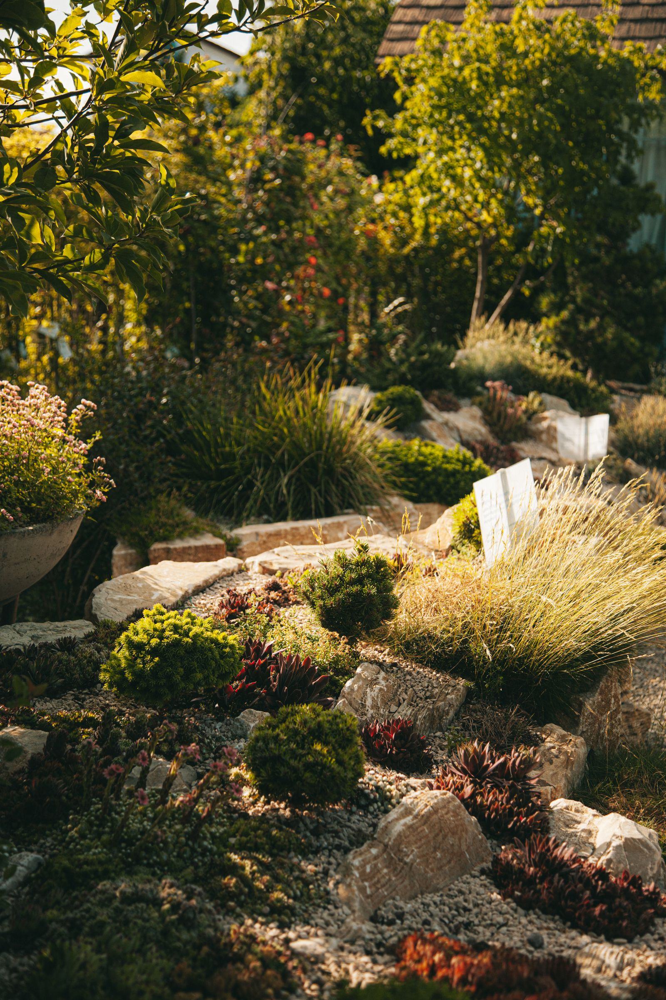

Seu jardim, do seu jeito
Um projeto pensado para o espaço e para a rotina de quem vive nele.

Espaços para respirar, desacelerar e viver. Um novo olhar para o jardim que faz parte da sua história.
Um projeto pensado para o espaço e para a rotina de quem vive nele.
Manutenção de áreas verdes para preservar a beleza de cada detalhe.
Plantio e renovação para dar uma nova vida ao seu jardim.
Uma conversa para entender o que você procura.
Serviços e condições combinados antes de começar.
Depois da aprovação, alinhamos a execução.
Neste modelo, seu cliente encontra seus serviços e pode iniciar uma conversa para contar o que precisa.
Quero este modelo para meu negócio ↗Esta demonstração não recebe agendamentos ou pedidos do negócio fictício.
O contato acima é com a Solvi.